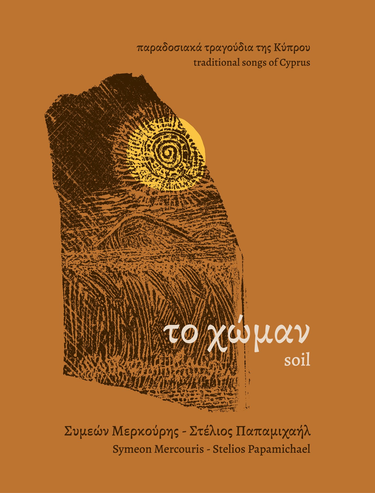
Στον παπάν μου, Σπύρον (1954-2011)To my father, Spyros (1954–2011)
Ο δίσκοςThe album
Εισαγωγικό σημείωμαIntroductory note
Έμπνευση μου για τον δίσκον «το χώμαν» εν’ κάποιες ερμηνείες κυπριακών παραδοσιακών τραουθκιών που άκουσα που «πραχτικούς», δηλαδή χωρίς τυπικήν μουσικήν εκπαίδευσην μουσικούς τζ̆αι τραουδιστές. Στην πλειοψηφίαν τους οι μουσικοί τούτοι εδραστηριοποιηθήκαν στο πρώτον μισόν του εικοστού αιώνα. Γράφω πιο κάτω στες σημειώσεις για κάθε κομμάτιν του δίσκου ποιοι εν’ τούτοι τζ̆αι το μουσικόν αρχείον που το οποίον τους άκουσα.
Εχτός, όμως, που μιαν σύντομην βιογραφίαν για τον καθέναν που τους μουσικούς τζ̆αι τραουδιστές που εχρησιμοποίησα ως αναφοράν, στα κείμενα θα έβρετε τζ̆αι κάποιες που τες ιστορίες τους που εμοιραστήκαν μαζίν μου οι ίδιοι, αν ήταν εν ζωή, ή επιζώντες συγγενείς τους. Στην αρχήν εξεκίνησα να ψάχνω πληροφορίες για την ζωήν τούντων βιωματικών μουσικών τζ̆αι τραουδιστών καθαρά για δικήν μου ενημέρωσην. Εθεώρησα ότι, αν ήταν να διασκεύασω, να ανασυνθέσω ή να ερμηνεύσω κάτι με τούντους αθρώπους ως αναφοράν την ερμηνείαν ή τον στίχον τους, έπρεπε να μάθω ό,τι εμπορούσα για τζ̆είνους. Εγύρεψα τους ίδιους, αν εζούσαν, ή, αν όι, τα παιθκιά, αγγόνια τζ̆’ αδερφοτέχνια τους για να τους κάμω συνέντευξην. Συνολικά εκουβένγκιασα με δεκαεννιά άτομα σε Λευκωσίαν, Παραλίμνιν, Λιοπέτριν, Αυκόρου, Δερύνειαν, Ξυλοφάου, Λεμεσό, Έμπαν τζ̆αι Γιόλου. Έμαθα ιστορίες για την ζωήν τούντων μουσικών τζ̆αι τραουδιστών, που εδράσαν σε μιαν καθημερινότηταν πολλά διαφορετικήν που τούτην της δικής μου της γενιάς τουλάχιστον. Επίσης επροσπάθησα να μαζέψω μαρτυρίες που αφορούσαν την τέχνην τους, που επρωταγωνιστούσεν σε χαρές, χάζ̆ια τζ̆αι ζιαφέθκια, αλλά είσ̆εν επίσης ξεχωριστήν θέσην τζ̆αι στα μαράζ̆ια τζ̆αι τες θλίψεις.
Εκ πρώτης όψεως κάποιος μπορεί να πει ότι οι ιστορίες που παραθέτω στες σημειώσεις κάθε κομμάθκιού εν έχουν να κάμουν τίποτε με το κομμάτιν που παρουσιάζεται. Συγκεντρώννοντας, όμως, σιγά-σιγά τούντες ιστορίες, αντιλήφθηκα ότι εσταμάτησεν πλέον η έρευνα μου να γίνεται καθαρά για δικήν μου προσωπικήν ενημέρωσην, τζ̆αι εξεκίνησεν να αποχτά αυτοτελήν σημμασίαν, πιστεύκω, για τον ακροατή του δίσκου. Όπως η ερμηνεία σε έναν παραδοσιακόν τραούδιν, ιδίως ενός σύγχρονου μουσικού, ενημερώννεται που τες πληροφορίες, βιογραφικές τζ̆αι μη, που κάτεχει για την αναφοράν του, έτσι, τζ̆αι ο σύγχρονος ακροατής που θα ακούσει τούντον δίσκον ίσως τον εννοήσει καλλύττερα θκιεβάζοντας τες ιστορίες που εσυμπεριέλαβα για κάθε κομμάτιν. Θα αννοίξει έναν παράθυρον σε μιαν Κύπρον άλλης εποχής, με πρωταγωνιστές τους ίδιους τους μουσικούς τζ̆αι τραουδιστές. Το μεγάλον στοίχημαν για εμέναν τότε εν’ τούτον: αφού ποσ̆σ̆επάσει ο αναγνώστης μέσα που τούντο παραθύριν, να μπορέσει ν’ αφεθεί σαν ακροατής τζ̆αι ν’ ακούσει τούντην μουσικήν όπως την εκαταλάβαμεν τζ̆αι ηχογραφήσαμεν εμείς το 2026, με μουσικούς, ως επί το πλείστον, γέννημαν των δεκαετιών του ’80 τζ̆αι του ’90. Αν καταφέρουμεν να τον συγκινήσουμεν, τότε εκαταφέραμεν να παρουσιάσουμεν τούντα δεκαεφτά κομμάθκια του δίσκου, όι ως μουσικά κειμήλια, αλλά ως ζώσαν παράδοσην σχετικήν με το σήμμερα.
My inspiration for the album to hóman (soil) came from interpretations of Cypriot traditional songs that I heard being performed by what we term as prahtikoí – experiential musicians and singers without formal musical training. Most of these musicians were active during the first half of the 20th century. In the notes for each track, I set out the details of each of these musicians and singers, as well as the musical archive from which I heard their performances.
In addition to a brief biography of each of the musicians and singers whose work I used as a reference, you will also find in the album notes some of their stories, shared with me either by the musicians themselves, if they are still alive, or by their surviving relatives. I initially began researching the lives of these experiential musicians and singers purely for my own benefit. I felt that if I was going to arrange, recompose, or perform something with these people as a reference, I ought to find out whatever I could about them. I sought out the musicians themselves if alive or, where they were not, their children, grandchildren, nieces and nephews, in order to interview them. In total, I spoke with nineteen people in Nicosia, Paralimni, Liopetri, Avgorou, Deryneia, Xylophagou, Limassol, Empa and Giolou. Through this process I collected stories about the lives of each of these musicians and singers, lives rooted in an everyday reality quite different from that of my own generation. I also tried to gather testimonies relating to their art, which played a key role in celebrations, such as weddings, local fairs (panayírka) and feasts (ziaféthkia) but which also held a special place in loss, sorrow and heartache.
At first glance, one might say that the stories I have included in the notes for each track have nothing to do with the piece itself. As I gradually gathered these stories, however, I realised that my research had ceased to be exclusively for my own benefit and had, I believe, begun to acquire a significance of its own for the listener of the album. Just as the interpretation of a traditional song—particularly by a contemporary musician—is informed by the biographical and other knowledge they possess about their reference, the contemporary listener who listens to this album may come to understand it better by reading the stories I collated for each track in the album notes. They will open a window into a Cyprus of another era, with the musicians and singers themselves as its protagonists.
The great challenge for me, then, is this: once the reader has peered through this window in the past, I hope they can then, as a listener, listen to our music as we understood and recorded it in 2026, with musicians who, for the most part, were born in the 1980s and ’90s. If we succeed in making today’s listener receptive to our way of expressing traditional music, then we will have succeeded in presenting these seventeen pieces of the album, not as musical relics, but as a living tradition that remains relevant to the present.
Καλήν ακρόασην.
I hope you enjoy listening.
Συμεών Μερκούρης
Symeon Mercouris
ΣυντελεστέςContributors
- Μουσική επιμέλεια: Συμεών Μερκούρης, Στέλιος Παπαμιχαήλ
- Παραγωγή/διασκευές/ανασυνθέσεις/ενορχηστρώσεις: Συμεών Μερκούρης
Μουσικοί
- Συμεών ΜερκούρηςΦωνή, λαούτο (Δ1* κομμάτι 2, 4, 6 Δ2** κομ. 3, 5), κρητικό λαούτο (Δ1 κομ. 8)
- Στέλιος ΠαπαμιχαήλΦωνή, λύρα (Δ1 κομ. 2, 4, 8 Δ2 κομ. 1, 3, 9) λαούτο (Δ1 κομ. 5, 8 Δ2 κομ. 2, 4, 8), κρητικό λαούτο (Δ1 κομ. 3)
- Νικολέττα ΔημητρίουΦωνή (Δ2 κομ. 5)
- Παύλος ΜιχαηλίδηςΒιολί (Δ1 κομ. 5, 6 Δ2 κομ. 2, 8)
- Εύρος ΒοσκαρίδηςΒιολί (Δ2 κομ. 4)
- Χριστίνα ΠολυκάρπουΛύρα (Δ2 κομ. 5)
- Χαράλαμπος ΠαντελήΤαμπουράς (Δ1 κομ. 7 Δ2 κομ. 5, 6), Σάζι (Δ1 κομ. 7), λαούτο (Δ1 κομ. 6)
- Δημήτρης ΠήχαςΚοντραμπάσο (Δ2 κομ. 1, 4)
- Κωνσταντίνα ΞενοφώντοςΤαμπουτσ̆ά (Δ1 κομ. 4)
*Δίσκος 1 **Δίσκος 2
Φιλικές συμμετοχές
- Αντώνης ΠουλλήςΦωνή (Δ1 κομ. 1)
- Μιχάλης ΠουλλήςΦωνή (Δ2 κομ. 6)
Ηχοληψία και μάστερινγκ
- Ηχογράφηση/μίξη: Μικαέλα Τσαγγάρη (Elbow Room Studio)
- Μάστερινγκ: Μπάρι Χατζ̆ήκυριακου (All Ears Mastering)
Κείμενα και επιμέλεια κειμένων
- Έρευνα – κείμενα: Συμεών Μερκούρης
- Επιμέλεια/διορθώσεις κυπριακών κειμένων – στίχων: Νικολέττα Δημητρίου
- Μετάφραση κειμένων – στίχων: Συμεών Μερκούρης
- Επιμέλεια/διορθώσεις μεταφρασμένων κειμένων – στίχων: Δημήτρης Πήχας
Εικαστική επιμέλεια και σχεδιασμός
- Χαρακτικό - πετρογραφία εξωφύλλου, λεπτομέρειες από χαρακτικά έργα στο ένθετο: Γιώργος Α. Κωνσταντίνου
- Γραφιστική επιμέλεια/σχεδιασμός: Πόπη Πισσουρίου
- Φωτογραφίες: Κατερίνα Δημητρίου
- Επιμέλεια φωτογραφιών: Έμμα Λουίζ Χαραλάμπους
- Σχεδιασμός ιστοσελίδας: Γιάννης Παχίτας
- Musical direction: Symeon Mercouris, Stelios Papamichael
- Production/arrangements/re-compositions/orchestration: Symeon Mercouris
Musicians
- Symeon MercourisVocals, lute (D1* tracks 2, 4, 6; D2** tracks 3, 5), Cretan lute (D1 track 8)
- Stelios PapamichaelVocals, lyra (D1 tracks 2, 4, 8; D2 tracks 1, 3, 9), lute (D1 tracks 5, 8; D2 tracks 2, 4, 8), Cretan lute (D1 track 3)
- Nicoletta DemetriouVocals (D2 track 5)
- Pavlos MichaelidesViolin (D1 tracks 5, 6; D2 tracks 2, 8)
- Evros VoskaridesViolin (D2 track 4)
- Christina PolycarpouLyra (D2 track 5)
- Charalambos PanteliTambouras (D1 track 7; D2 tracks 5, 6), saz (D1 track 7), lute (D1 track 6)
- Dimitris PichasDouble bass (D2 tracks 1, 4)
- Konstantina XenofontosPercussion (D1, track 4)
*D1 = Disc 1 **D2 = Disc 2
Guest appearances
- Antonis PoullisVocals (D1 track 1)
- Michalis PoullisVocals (D2 track 6)
Recording and mastering
- Recording and mixing: Mikaela Tsangari (Elbow Room Studio)
- Mastering: Bari Hadjikyriacou (All Ears Mastering)
Texts and editing
- Research and texts: Symeon Mercouris
- Editing/proofreading of texts and lyrics (Cypriot): Nicoletta Demetriou
- Translation of texts and lyrics: Symeon Mercouris
- Editing/proofreading of translated texts and lyrics (English): Dimitris Pichas
Artwork and design
- Album cover stone engraving; details from engraved works in the album booklet: giorgos A. Konstantinou
- Graphic design: Popi Pissouriou
- Photography: Katerina Demetriou
- Photo editing: Emma Louise Charalambous
- Website design: Yiannis Pahitas
ΕυχαριστίεςAcknowledgements
Για να γίνει τούτος ο δίσκος πραγματικότητα, εβάλαν πολλοί το σ̆έριν τους τζ̆αι την αγάπην τους.
Θέλω να ευχαριστήσω πρώτα τον Στέλιον Παπαμιχαήλ. Για ανάμιση χρόνον περίπου εσυζητήσαμεν, εδιαφωνήσαμεν τζ̆αι επροβάραμεν μαζίν τα κομμάθκια που θα ακούσετε. Όσον μουσικόν αποτύπωμα έχω εγώ στον δίσκον, άλλον τόσον έσ̆ει τζ̆αι τζ̆είνος. Ευχαριστώ τον για το ταλέντον του, την υπομονήν του τζ̆αι κυρίως για την θέρμην με την οποίαν αγκάλιασεν τούντην δουλειάν.
Ευχαριστώ ούλλους τους άλλους μουσικούς που επαίξαν τζ̆αι ετραουδήσαν μέσα στον δίσκον: τον Παύλον Μιχαηλίδην, τον Εύρον Βοσκαρίδην, τον Χαράλαμπον Παντελήν, την Νικολέτταν Δημητρίου, την Χριστίναν Πολυκάρπου, τον Δημήτρην Πήχαν τζ̆αι την Κωσταντίναν Ξενοφώντος, τζ̆αι φυσικά τον Αντώνην Πουλλήν τζ̆αι τον Μιχάλην Πουλλήν για την φιλικήν τους συμμετοχήν. Ο καθένας τους εχάρισεν στον δίσκον την δεξιοτεχνίαν του τζ̆αι το μεράκκιν του τζ̆αι τους ευχαριστώ πολλά.
Ευχαριστώ την Μικαέλαν Τσαγγάρη (Elbow Room Studio) για την ηχογράφησην, την μίξην τζ̆αι το πλατύν χαμόγελον με το οποίον αντιμετώπιζεν την κάθε παραξενιάν μου σε τούντην διαδικασίαν, τον Μπάρι Χατζ̆ήκυριακου (All Ears Mastering) για τον επαγγελματισμόν του στο μάστερινγκ, την Νικολέτταν για την αγάπην που έδωσεν στην επιμέλειαν των κυπριακών κειμένων τζ̆αι στίχων, τον Δημήτρην Πήχαν για την επιμέλειαν των μεταφρασμένων κειμένων τζ̆αι στίχων, τον Παύλον, τον Χαράλαμπον, τον Γιώργον Χατζ̆ηπιερήν, τον Αντώνην Μικέλην τζ̆αι τον Μίλτον Μπούμη για την κριτικήν τζ̆αι τα σχόλια τους στες διάφορες μίξεις.
Ευχαριστώ τον Γιώργον Α. Κωνσταντίνου που μου εχάρισεν την πετρογραφίαν του εξωφύλλου απλά επειδή με άκουσεν να τραουδώ μιαν νύχταν στην Μικρήν Άρκτον στην Λευκωσίαν, την Πόπην Πισσουρίου – το δεύτερον πλατύν χαμόγελον που με έπιαεν που το σ̆έριν τζ̆αι με εστράτεψεν στον άγνωστον για μέναν κόσμον των γραφιστικών, την Κατερίναν Δημητρίου για τες φωτογραφίες της, την Έμμα Λουίζ Χαραλάμπους που τες επιμελήθηκε τζ̆αι τον Γιάννην Παχίταν για την ιστοσελίδαν τζ̆αι την πάσης φύσεως τεχνολογικήν υποστήριξην.
Τον Μιχάλην Ττερλικκάν για τες κουβέντες μας τζ̆αι το γινάτιν του να ερευνά τζ̆αι να τραγουδά την παραδοσιακήν μουσικήν της Κύπρου – ειδικά σε δύσκολες εποχές που εν ήταν της μόδας τζ̆αι εν «επούλαν».
Τζ̆αι φυσικά τον κάθε έναν που τους αθρώπους με τους οποίους εκουβενγκιάσαμεν για τα οικεία τους πρόσωπα, μουσικούς τζ̆αι τραουδιστές, τζ̆αι τους αθρώπους που με εβοηθήσαν να έρτω σε επαφήν μαζίν τους. Εβάλαν με σπίτι τους, ετζ̆εράσαν μου καφέν (ενίοτε τζ̆αι γλυκόν καρυδάκιν) τζ̆αι εδωρίσαν μου κάτι εξαιρετικά πολύτιμον, για το οποίον τους είμαι ευγνώμων: τες ιστορίες τους. Ελπίζω τούτη η δουλειά να εν’ αντάξια της εμπιστοσύνης τους τζ̆αι να λειτουργήσει τζ̆αι ως έναν μικρόν μνημόσυνον για τους δικούς τους. Πιο συγκεκριμένα, ευχαριστώ τον Παναγιώτην Παναγιώτου, τον Κυριάκον Χατζ̆ηανδρέου, τον Αντρέαν Σιαντάνη, τον Παναγιώτην Κουμάση, τον Χριστάκην Παπανικολάου, τους Πουλλήδες (Γιαννάκην, Αντώνην, Γιώργον, Μιχάλην τζ̆αι Ελένην), τον Γιώργον Πριγκόπουλλον, τον Πέτρον Ράφτην, τον Αντρέαν Χατζ̆ηαχιλλέως, την Ελένην Πιττάτζ̆η, την Μαρίαν Ττάκκα Δημητρίου, την Άνναν Πετρίδου, τον Κωστήν Δημητρίου, την Μαργαρίταν Πιττιρή Δημητρουδιού, την Ελένην Πιττιρή Σαλούτα, τον Θεόδωρον Μαυρήν, τον Αντώνην Τσ̆ιάκκιρον, τον Σολωμόν Οικονόμου, τον π. Κλεόπα Στυλιανού, την Νεοφύταν Ευθυμίου, την Άνναν Κατσαντώνη Πρωτοπαπά τζ̆αι την Γιανούλλαν Κατσαντώνη Φώκκη.
Many people have lent a hand and given their love to this album.
Firstly, I would like to thank Stelios Papamichael. For about a year and a half, we talked, disagreed and rehearsed together the pieces you are about to hear. Whatever musical imprint I have on this album, he has just as much. I thank him for his talent, his patience and above all for the warmth with which he embraced this project.
I would like to thank all the other musicians who played and sang in the album: Pavlos Michaelides, Evros Voskarides, Charalambos Panteli, Nicoletta Demetriou, Christina Polycarpou, Dimitris Pichas and Konstantina Xenofontos; and, of course, Antonis Poullis and Michalis Poullis for their guest appearances. Each of them brought their virtuosity and passion to the album and I am deeply grateful to all.
My thanks go to Mikaela Tsangari (Elbow Room Studio) for recording and mixing the album and for the smile with which she met every one of my quirks throughout the process; to Bari Hadjikyriacou (All Ears Mastering) for his professionalism in mastering; to Nicoletta for the care and love she devoted to editing the Cypriot texts and lyrics; to Dimitris Pichas for editing the translated texts and lyrics; to Pavlos, Charalambos, George Hadjipieris, Antonis Mikelis and Miltos Boumis for their comments on the various mixes.
I would like to thank giorgos A. Constantinou, who gifted the stone engraving for the cover because he heard me sing one night at ‘Mikri Arktos’ in Nicosia; Popi Pissouriou - the second smile that took me by the hand and guided me into the unfamiliar world of graphic design; Katerina Demetriou for her photographs and Emma Louise Charalambous for editing them; and Yiannis Pahitas for the website and all kinds of technical support.
I am grateful to Michalis Tterlikkas for our conversations and for his dedication in researching and singing the traditional music of Cyprus - especially during difficult times, when it was not in ‘fashion’ and there was scarcely an audience for it.
And, of course, I want to thank every person I spoke to about their relatives who were musicians and singers, as well as everyone who helped me get in touch with them. They welcomed me into their homes, offered me coffee (and sometimes spoon sweets) and gave me something extraordinarily precious for which I will always be grateful: their stories. I hope this work proves worthy of their trust and serves as a small memorial to their loved ones. In particular, I would like to thank: Panayiotis Panayiotou, Kyriacos Hadjiandreou, Andreas Siantanis, Panayiotis Koumasis, Christakis Papanikolaou, the Poullis family (Giannakis, Antonis, Giorgos, Michalis and Eleni), Giorgos Prigkopoullos, Petros Raftis, Andreas Hadjiachilleos, Eleni Pittatzi, Maria Ttakka Demetriou, Anna Petridou, Costis Demetriou, Margarita Pittiri Demetroudiou, Eleni Pittiri Salouta, Theodoros Mavris, Antonis Tsiakkiros, Solomos Oikonomou, Father Kleopas Stylianou, Neofyta Efthymiou, Anna Katsantoni Protopapa and Yianoulla Katsantoni Fokki.
ΦωτογραφίεςPhotos
Στιγμιότυπα από τις συνεντεύξεις (2024 - 2026)Moments from the interviews (2024 - 2026)
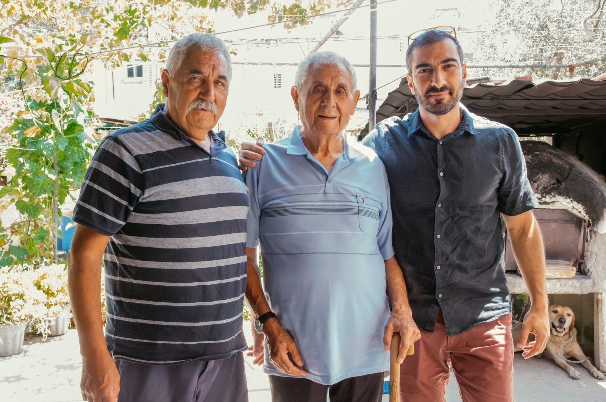
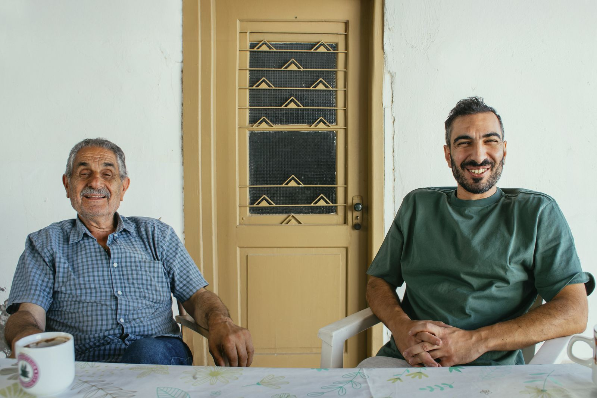
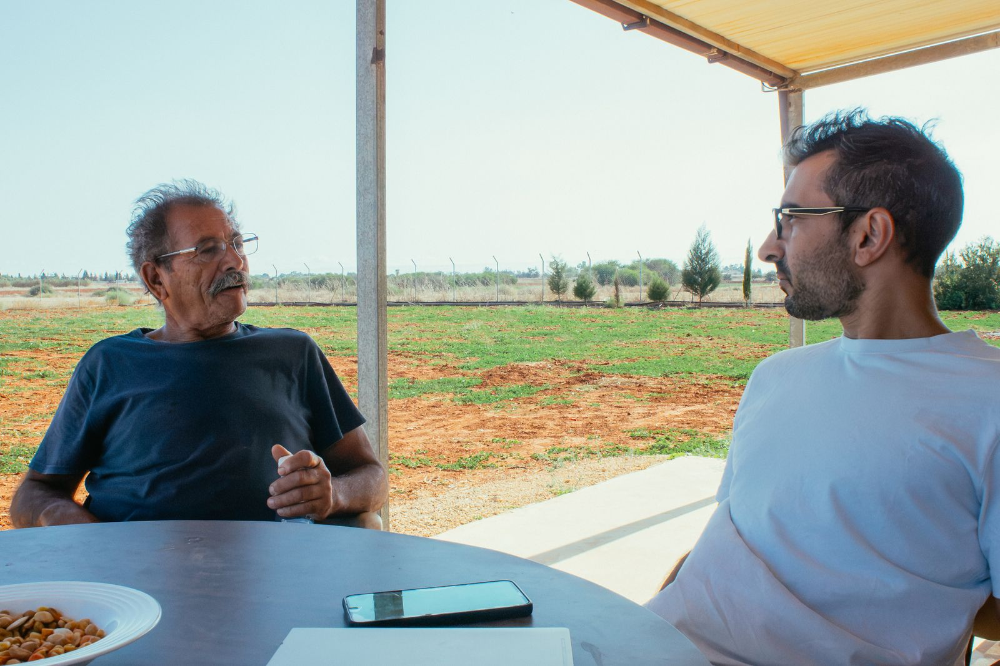
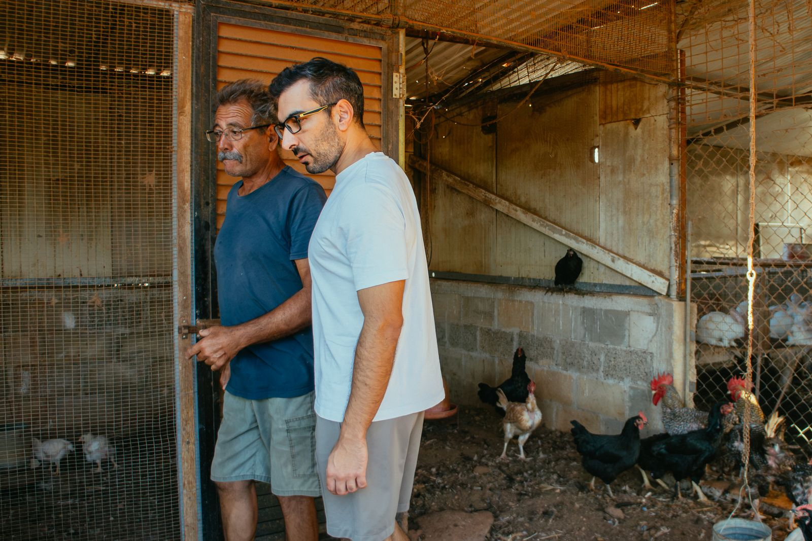
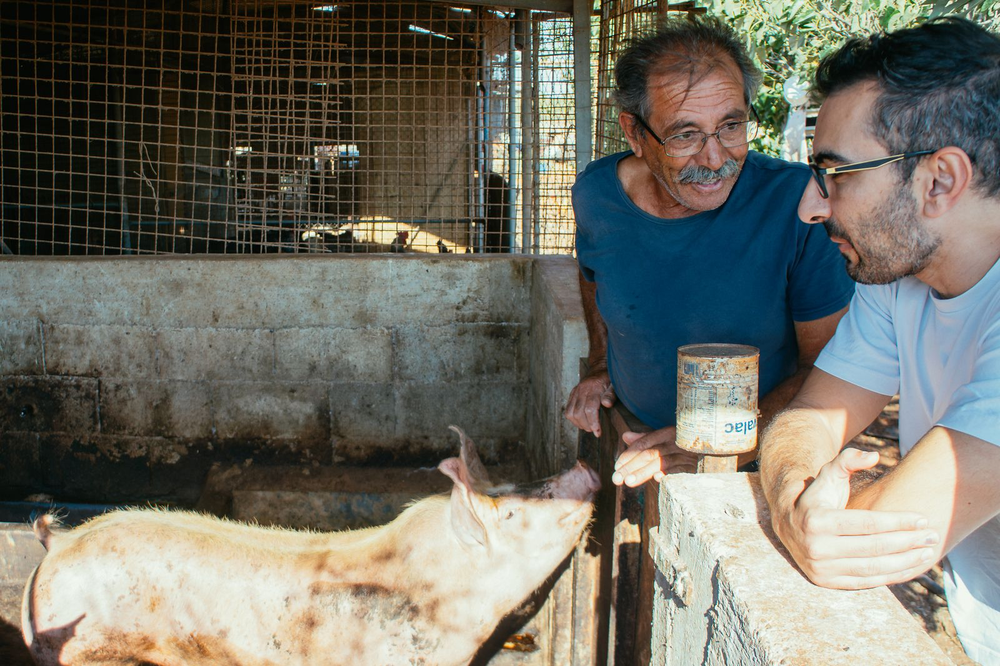
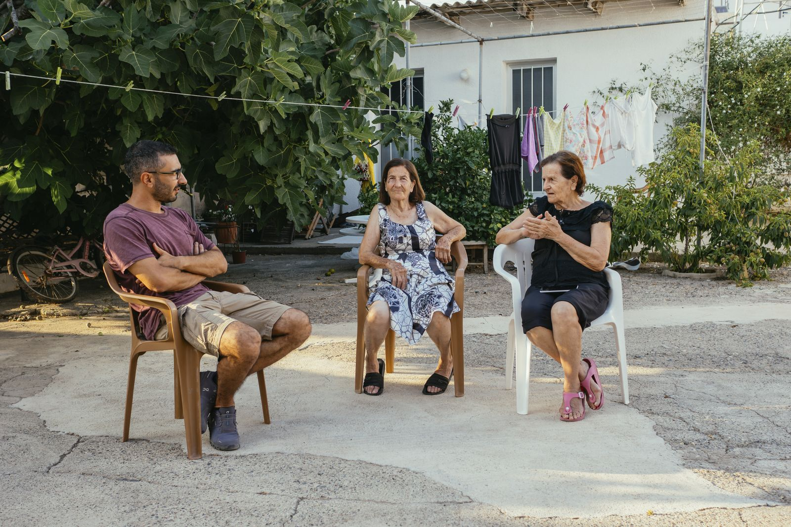
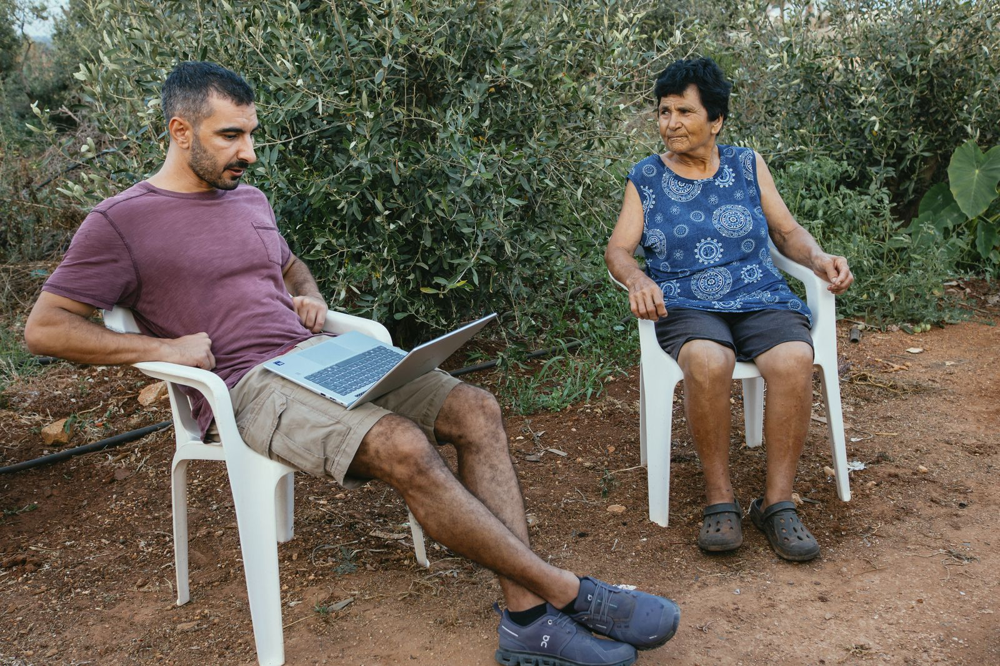
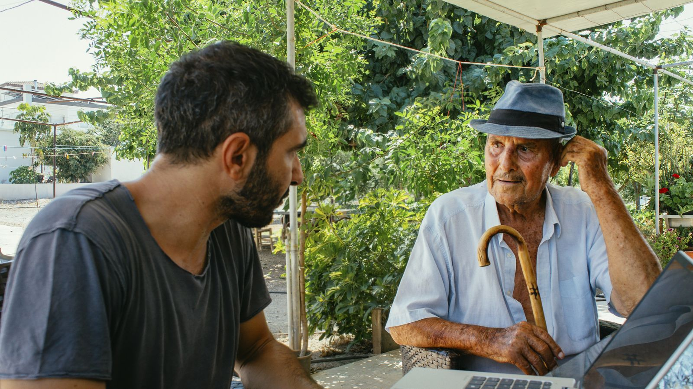
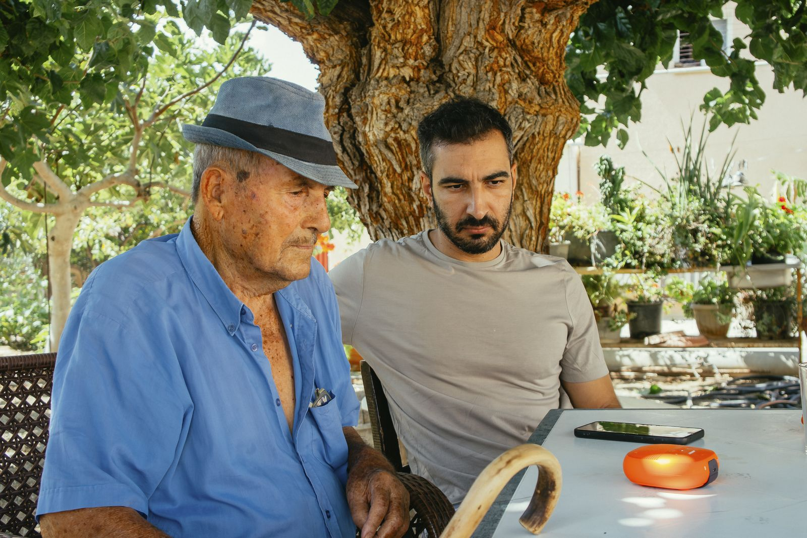
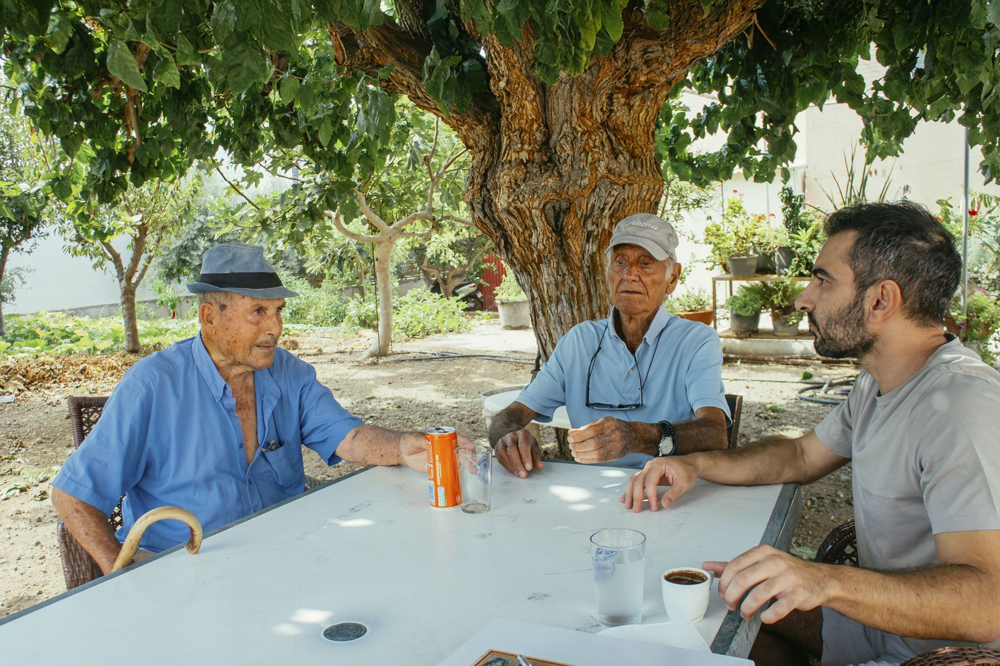
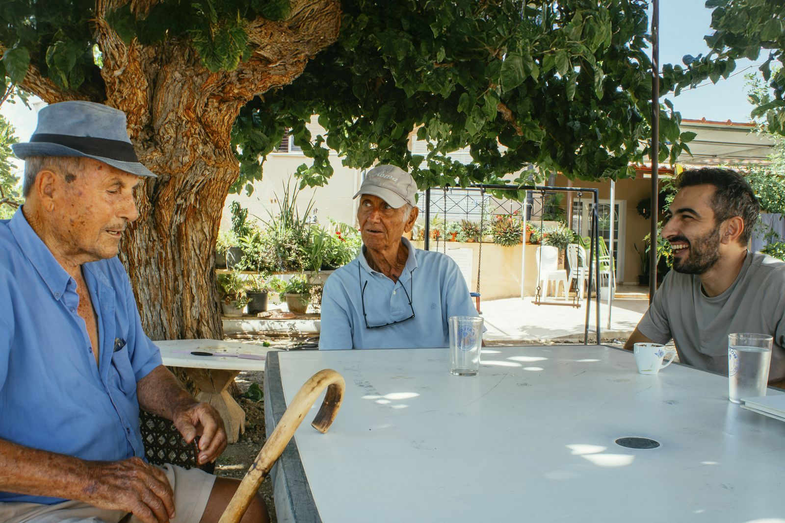
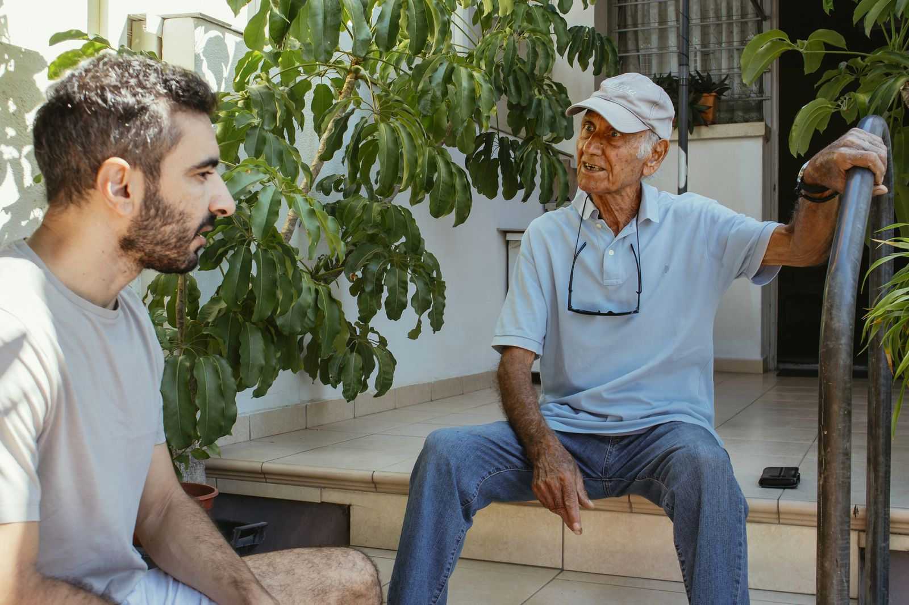
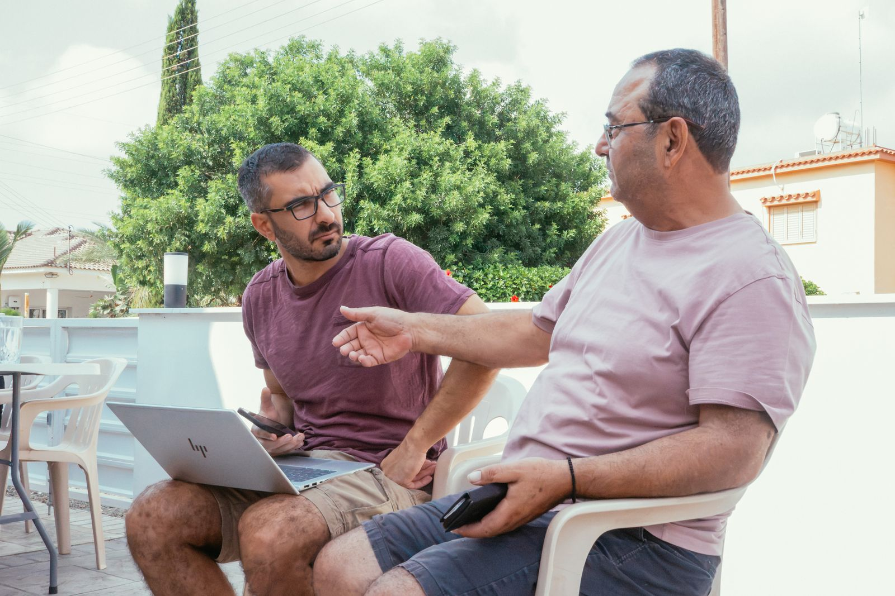
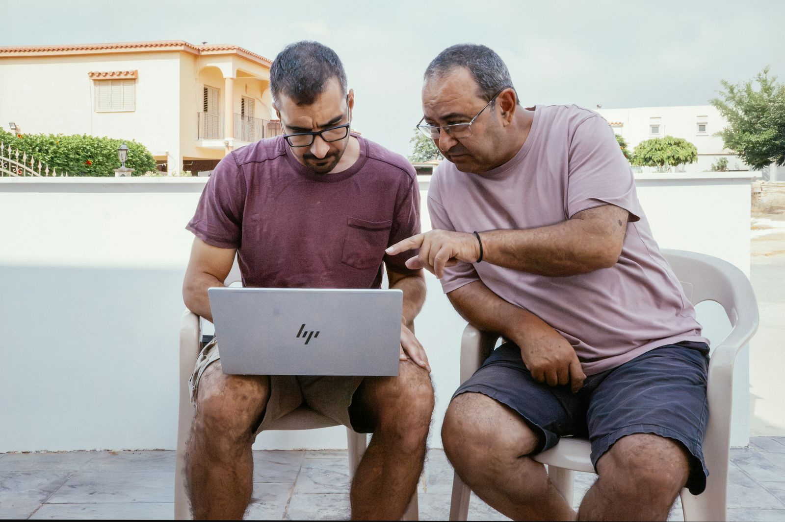
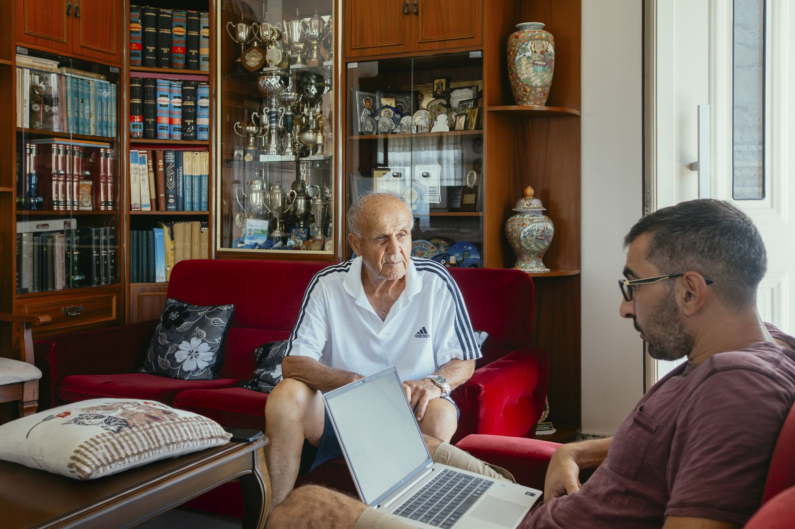
Προ-παραγγελίαPre-order
Ο δίσκος «το χώμαν»: δύο CD και βιβλίο 140 σελίδων με τους στίχους, τις σημειώσεις, τις συνεντεύξεις και τις φωτογραφίες.
Το CD και το βιβλίο του δίσκου αναμένεται να κυκλοφορήσουν τον Φεβρουάριο του 2027.
The album to hóman: two CDs and a 140-page book with the lyrics, notes, interviews and photographs.
The physical CD and album booklet are expected to be released in February 2027.
Αποστολή: Κύπρος €5 · εξωτερικό €20
Shipping: Cyprus €5 · international €20
Προ-παραγγελία CDPre-order the CD
Η πληρωμή γίνεται με ασφάλεια μέσω Stripe.Payment is handled securely by Stripe.
ΕπικοινωνίαContact
Έχετε μια ερώτηση ή θέλετε απλώς να πείτε γεια; Επικοινωνήστε:
Have a question or just want to say hello? Get in touch:
simon.mercouris@gmail.com